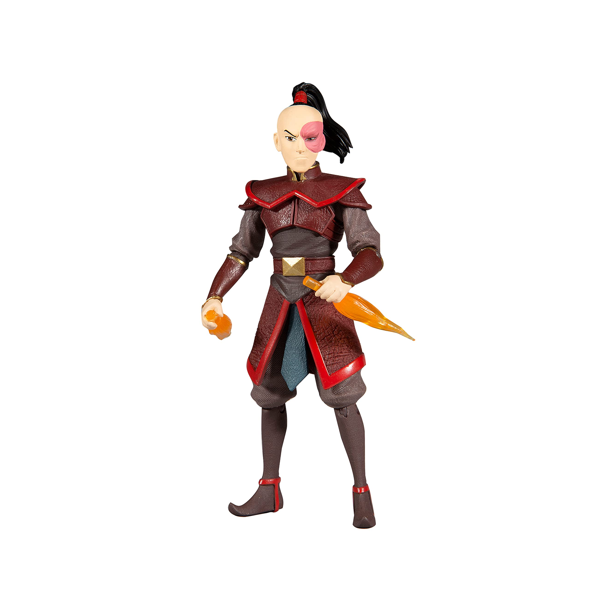

Zuko – Fire Nation Stance

Zuko stands tall in full Fire Nation armor, flame at the ready and honor in his eyes.
Material: Polystone with flame-effect resin
Size: Approx. 28 cm tall, 15 cm wide, 12 cm deep
Bold and brooding—an essential piece for any true fan of the prince’s redemption arc